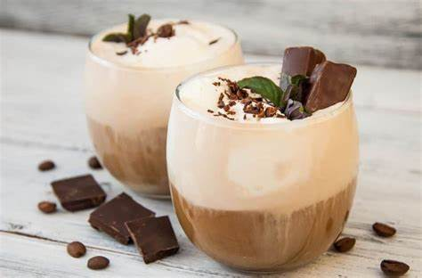

About Mocha
Mocha, short for caffe mocha, is a chocolate-flavored variant of a caffe latte. It typically contains espresso, steamed milk, and chocolate.

Ways of Preparation
Mocha can be prepared in various ways, including:
- Classic Mocha: Espresso, steamed milk, and chocolate syrup
- White Mocha: Espresso, steamed milk, and white chocolate
Calories in Mocha
The table below shows the approximate calories in a mocha based on different factors:
| Factors | Calories |
|---|---|
| Classic Mocha (12 oz) | 250 |
| White Mocha (12 oz) | 280 |